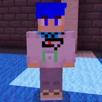

Синеволосый персонаж – один из самых таинственных героев вселенной Данила. У него ярко-синие волосы и такие же синие глаза, а его внешность и действия провоцируют множество теорий и вопросов среди зрителей. Этот персонаж отсылает к одному из друзей Данила, Азизхону, известному под псевдонимом Фяша. Кроме того, его образ перекликается с другим таинственным персонажем — мумией с синими волосами.
Азизхон (Фяша)▼
Синеволосый персонаж появился в сериале Данила как аллюзия на его друга Азизхона, с которым он поддерживает тесные дружеские отношения. В реальной жизни Азизхон известен как Фяша, и его образ находит отражение в синеволосом герое. Этот персонаж не только поддерживает Данила в его приключениях, но и добавляет интригу благодаря своей загадочной натуре. Сам Данил, создавая этого героя, делал отсылку на реальные события и людей, что придаёт повествованию особую глубину и значимость.
Синеволосая мумия▼
Во втором сезоне «Магический мир», помимо синеволосого героя, в 4 серии зрители сталкиваются с таинственной мумией, также обладающей синими волосами. Она появляется в пустыне, где Данил находит древний артефакт – анх. Несмотря на свою молчаливую и неподвижную природу, эта мумия играет ключевую роль в развитии сюжета, так как её внешний вид и загадочные артефакты побуждают Данила к дальнейшим приключениям и поискам.
Итог ▼
Синеволосый персонаж стал одним из самых обсуждаемых и размышляемых в проектах Данила. Его связь с реальным человеком – Азизхоном, а также с мумием из «Магического мира» вызывает множество вопросов. Теории зрителей только усиливают интерес к этому герою, а возможно, в следующем сезоне мы узнаем всю правду о его происхождении и мотивации.